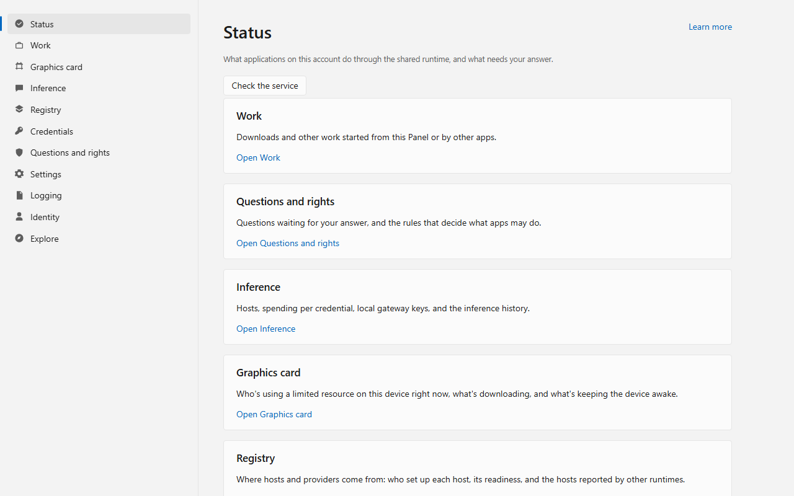
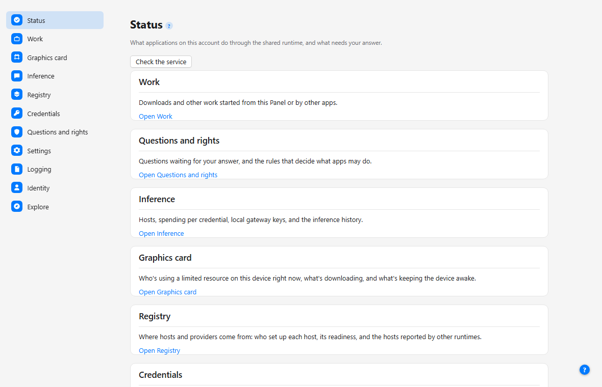

Windows
Download the x64 MSI or ARM64 MSI. The installer defaults to Just me. Everyone requires administrator access. Adding commands to PATH is optional. Open the installed Panel to inspect runtime readiness and permissions.
Adopt
Applications already use abstractions for files, windows, networks, and libraries. OA extends that idea to running capabilities such as downloads, model calls, logging, storage, configuration, and application tools. Choose the capability, add its client, run the OA service, and connect an available implementation.
Release notes list available packages, included features and installation verification. For source integrations, Coverage shows which capability, language and operating-system combinations were tested.
Install 0.3.0 to use the current shared runtime. The release notes list each asset's contents and package verification, including Windows Panel availability.
Historical 0.2.0 platform evidence remains in the previous release record.
Download the x64 MSI or ARM64 MSI. The installer defaults to Just me. Everyone requires administrator access. Adding commands to PATH is optional. Open the installed Panel to inspect runtime readiness and permissions.
Download the amd64 archive or ARM64 archive, extract it and follow its install.sh instructions for the current user. See the release notes for installation verification and platform limits.
Download the 0.3.0 universal package. Its signing state and installation limits are listed in the release notes.
Windows and Linux packages are unsigned; Windows may show a SmartScreen warning. ARM64 packages are cross-built and are not installation-tested. Check the release SHA256SUMS before installing. Current macOS source uses XPC for program identity; the release notes identify the package signing state and installed-test scope.
Windows Panel: one approved native start on WebView2 runtime 153.0.4234.48 rendered the Panel and coincided with one Windows Event 4625 naming msedgewebview2.exe with bad-password status. The event’s initiating code path is unknown. No supported mitigation or repeated-start safety is established. Avoid repeated native starts on affected systems; runtime commands remain available.
After installation, check the runtime from a terminal. If you left PATH unchanged, use the installed executable’s full path.
openabstractions status --json
openabstractions probe --jsonstatus reports readiness; probe checks bounded service reads. status --json prints each capability's readiness as one JSON document. probe --json prints one JSON document per probe result. An application still needs permission for its requested actions and a compatible provider. The installation guide describes setup; the 0.2.0 upgrade report records migration from 0.1.7.
The 0.3.0 Windows installer offers feature choices. Check the release notes to see which optional tools are included in each asset before configuring an assistant.
| Feature | Installs | Default | What it does |
|---|---|---|---|
| Runtime | The service, Panel and command line | On | — |
| Local model stores | inventoryd.exe and the declaration file that registers it as an abstraction.storage/inventory-source@1 provider | On | Finds the model files your other apps already downloaded. |
| MCP gateway | openabstractions-mcp, with no runtime declaration (unlike the other features, it installs no declaration file in tools\declarations\, so the runtime does not know it exists or start it; an assistant launches it directly by its path, and it holds no rights until granted) | Off | Lets an AI assistant use OA's tools. |
| Model host | modelhostd.exe only; openabstractions models host writes its provider declaration later | Off | Loads a model file with an engine already on the machine and serves it. |
| NAS downloads | Nothing; the delegator runs inside the download service already | Held, hidden, never installed | — |
Local model stores are on in this development feature set because they only read directory listings and write nothing. The MCP gateway and model host default to off. Selecting either installs its program but grants it no rights; the gateway has no runtime declaration, and a model-host declaration is written when an operator configures a model.
The runtime starts as a background service. On Windows, a Panel icon sits in the notification area at sign-in, and the Panel also opens from the Start menu. The first time an application asks for a new permission, the Panel shows the question. Install the runtime once from the links above. See what works with it today. No application bundles the runtime yet.


The Panel's Credentials page stores secrets your applications use, without ever showing, logging or sending a value back to you. Its own "Learn more" and "?" links open the anchors below; the same steps are available from the command line.
Lists every credential registered on this account by name, kind, state, target and consumer; the secret itself is never shown, logged or sent back.
openabstractions credentials list
Registers a new secret under a name that is not already in use, scoped to the hosts it may be sent to and the services allowed to apply it. The credential manager binds the caller the same way for every write (CRED-H1).
openabstractions credentials add <name> --target HOST --for CONSUMER
Replaces the secret and expiry of a credential you have already listed, at the revision the list showed.
openabstractions credentials rotate <name>
Deletes a credential's secret immediately and keeps a tombstone recording that it existed, at the revision you already listed.
openabstractions credentials revoke <name>
Sets whether one application on one account may apply a named credential, using the same rights rule editor as the Panel's Questions and permissions page. Check and Apply evaluate the rights rule before the request is ever sent (CRED-A2).
openabstractions credentials allow <name> --program PATH, or add --deny
Start with one small application. It sends a structured event to OA, then retrieves that event from the service’s retained history. You grant history access to that application’s executable. OA keeps the record independently of the application.
The Go example includes Windows PowerShell and Linux commands for building the app, starting an isolated development runtime, and granting access. It uses a unique event ID to check that each run retrieves its own event.
wrote: worker started (quickstart-…)
read back: worker started (component=quickstart)Open the logging quickstart and source
Use the example and runtime from the same release revision. The isolated write/read path has been exercised on Windows. Installed applications use discovery to verify the runtime; this example uses an explicit development endpoint.
Pick downloads, inference, logging, storage, or another capability below. Add the facade client for your language and call the matching Resolve* method.
Connect an existing downloader, model server, or content store through a provider or adapter. Register what it can do with OA; applications continue using the capability API.
Start the runtime, choose which programs may do what, register providers and applications, save provider credentials, and inspect readiness.
Give an assistant access to model discovery, inference, durable inference jobs and visible application listings through OA’s development gateway.
Jobs retain accepted work. Downloads dedupe by digest in one job table and delegate the transfer. Storage finds content-addressed bytes.
Example: an image editor can recover the same model download after it restarts.
Logging carries structured events. Configuration exposes effective OA settings and the source of each value. Credentials keep secrets inside approved services.
Example: the OA Panel follows logs and configuration changes while an application runs.
Model describes model lookup. Router selects eligible hosts. Inference carries chat, embeddings, speech, transcription, live sessions, and image generation.
A chat completion needs inference alone.
Example: a coding assistant keeps its chat API while OA changes the selected provider.
Identity identifies the connected program and account. Rights chooses what that program may do. Asks carries specific human decisions. The facade can list visible apps and open a registered app with permission.
Example: an assistant opens an image editor and ties later actions to its current document.
Compare-and-set (CAS) replaces shared bytes only when they still match the version a provider read. Watch turns polled or pushed values into current snapshots, reports quiet after a chosen budget, and can collapse a burst into one settled callback.
Providers use these development utilities directly through their language packages. CAS has no behavioral contract page or capability claim.
The generated catalogue connects each responsibility to its contracts, language clients, source route, and recorded platform declaration.
ctx, cancel := context.WithTimeout(context.Background(), 2*time.Second)
defer cancel()
sink, err := facade.Discover().ResolveLog(
ctx,
facade.Requirements{Scope: facade.ScopeLocal},
)All five languages can use the shared native connection. Go, Python and C++ include it in the default facade entry point. Rust and JavaScript use separate native connector packages; their installed-runtime paths select and verify runtime identity. The facade repository gives revision-specific setup. The coverage page records capability-level checks. Runtime packaging and release qualification remain separate from these source paths.
JavaScript and Python packages for the resource, model bridge, model host and local-stores capabilities are not published to npm or PyPI in 0.3.0. The capability source remains available in its repository; registry artifacts have separate publication from the runtime.
The node ships as an ordinary ComfyUI custom node, described by its own pyproject.toml: a [tool.comfy] table names the Comfy Registry publisher and display name, and requires-comfyui names the ComfyUI version this node was run against.
[tool.comfy]
PublisherId = "openabstractions"
DisplayName = "OpenAbstractions Downloads"
requires-comfyui = ">=0.35.0"If OA is not running, Manager keeps working as before and the node explains what is missing rather than failing silently.
Once the adapter is installed and OpenCode points at it, one command writes OpenCode's provider block from what this machine can actually serve.
openabstractions opencode configureIt reads the router's servable chat families through the runtime and writes or updates the provider.<id> block. If no default model is set, it also selects one of those families. Other configuration keys stay untouched, and running it again with nothing changed leaves the file unchanged.
The MCP gateway is a separate optional stdio program. When the selected asset includes it, an assistant launches it directly. The gateway source and guide describe its tools and permission model.
The gateway guide includes source-build commands, permission setup and an OpenCode configuration example. Check the release notes to confirm whether the selected asset contains the optional program.
Application editing requires an application-specific adapter. For example, the ComfyUI experiment supplies preview, apply and readback tools tied to a document revision. The gateway’s application-listing tool exposes discovery metadata. See how application interaction fits together.